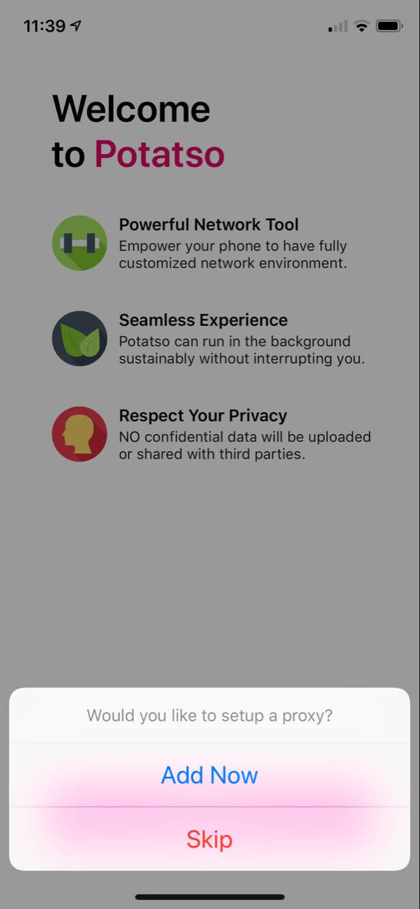
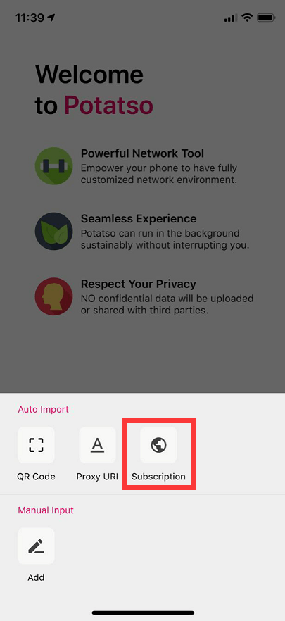

如何下載 ? Potatso Lite
註冊一個美區 Apple ID(假如你已經有其他國家的 Apple ID 則省略此步驟) 登入App Store,下載安裝 Potatso Lite (免費軟件)。
打開 Potatso Lite,點擊下方按紐,然後點擊「Add Now」，加入訂閱網址。
選擇「Subscribe」

1. 把您在貓屋 "快速開始" 頁面中的訂閱網址填入
2. 然後開啟「Auto Update」
3. 最後點擊右上角圖標完成添加
訂閱成功後, Potatso Lite 會自動下載更新節點
1.點擊「PROXY」選項,後選擇服務節點
2.最後按「Start」啟動翻牆服務連線
如果是首次連接,系统會弹出建立網路連接提示框,請點「Allow / 同意」。
最後您可以開始使用貓屋翻牆上網服務啦!